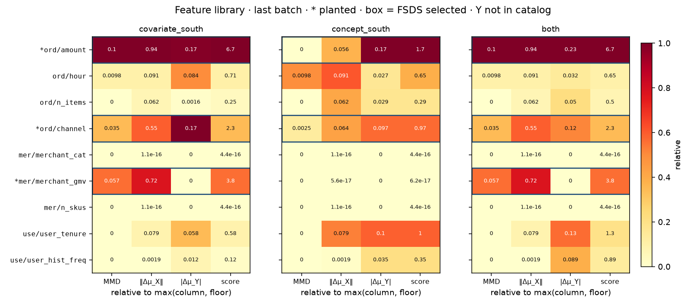
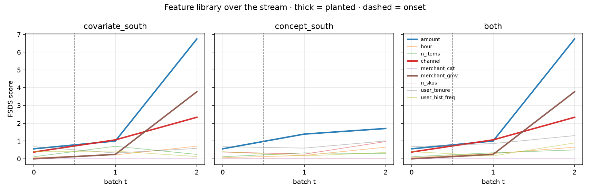
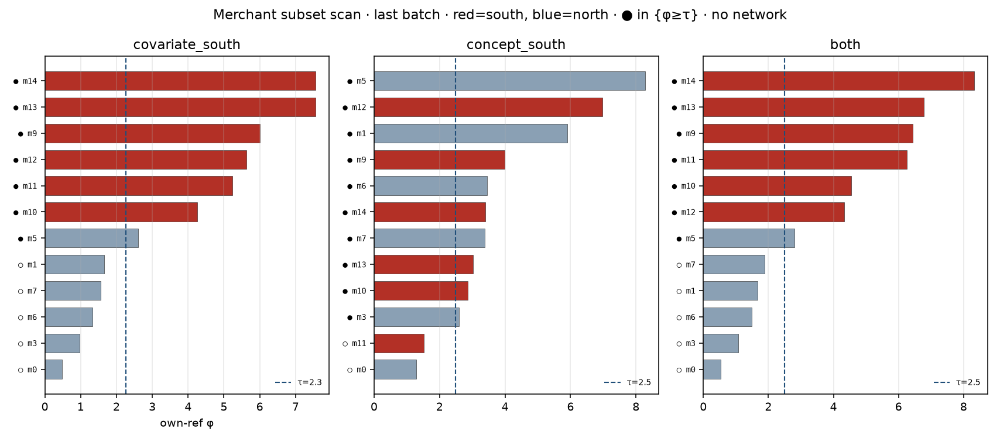

给老板的简报：report.html · REPORT.md。
图 1/2 = 各列 shift 程度；图 3 = 哪些商户在走（不是 feature 程度）。
目录九列，Y 不当特征。merchant_id 是外键，不是图方法。
橙色行 = 种下的列；粗体 = FSDS 选中。



FSDS 选中 amount, channel, merchant_gmv · loud subset = loud
| grain | feature | role | planted | selected | loud | score | MMD | ‖Δμ_X‖ | |Δμ_Y| |
|---|---|---|---|---|---|---|---|---|---|
| order | amount | 订单金额（进 logit） | x | yes | yes | 6.74 | 0.101 | 0.935 | 0.167 |
| order | hour | 下单时刻（噪声列） | 0.709 | 0.00979 | 0.0908 | 0.0844 | |||
| order | n_items | 件数（噪声列） | 0.247 | -0.003 | 0.0617 | 0.00157 | |||
| order | channel | 渠道 | x | yes | yes | 2.34 | 0.035 | 0.555 | 0.169 |
| merchant | merchant_cat | 商户类目（进 logit，不种 shift） | 4.44e-16 | -0.0736 | 1.11e-16 | 0 | |||
| merchant | merchant_gmv | 商户 GMV | x | yes | yes | 3.77 | 0.0566 | 0.725 | 0 |
| merchant | n_skus | SKU 数（噪声列） | 4.44e-16 | -0.0719 | 1.11e-16 | 0 | |||
| user | user_tenure | 用户 tenure（进 logit，不种 shift） | 0.584 | -0.00146 | 0.0788 | 0.0584 | |||
| user | user_hist_freq | 历史频次（噪声列） | 0.124 | -0.00378 | 0.00194 | 0.0124 |
merchant scan τ=2.27 · n_loud=7 / 12 · subset scan = sort φ and take a prefix; N = n_merchants
FSDS 选中 amount, channel · loud subset = loud
| grain | feature | role | planted | selected | loud | score | MMD | ‖Δμ_X‖ | |Δμ_Y| |
|---|---|---|---|---|---|---|---|---|---|
| order | amount | 订单金额（进 logit） | y|x | yes | 1.7 | -0.00388 | 0.0556 | 0.17 | |
| order | hour | 下单时刻（噪声列） | 0.653 | 0.00979 | 0.0908 | 0.0271 | |||
| order | n_items | 件数（噪声列） | 0.288 | -0.003 | 0.0617 | 0.0288 | |||
| order | channel | 渠道 | yes | 0.97 | 0.00255 | 0.064 | 0.097 | ||
| merchant | merchant_cat | 商户类目（进 logit，不种 shift） | 4.44e-16 | -0.0736 | 1.11e-16 | 0 | |||
| merchant | merchant_gmv | 商户 GMV | 6.18e-17 | -0.0715 | 5.55e-17 | 0 | |||
| merchant | n_skus | SKU 数（噪声列） | 4.44e-16 | -0.0719 | 1.11e-16 | 0 | |||
| user | user_tenure | 用户 tenure（进 logit，不种 shift） | 1 | -0.00146 | 0.0788 | 0.1 | |||
| user | user_hist_freq | 历史频次（噪声列） | 0.354 | -0.00378 | 0.00194 | 0.0354 |
merchant scan τ=2.48 · n_loud=10 / 12 · subset scan = sort φ and take a prefix; N = n_merchants
FSDS 选中 amount, channel, merchant_gmv · loud subset = loud
| grain | feature | role | planted | selected | loud | score | MMD | ‖Δμ_X‖ | |Δμ_Y| |
|---|---|---|---|---|---|---|---|---|---|
| order | amount | 订单金额（进 logit） | both | yes | yes | 6.74 | 0.101 | 0.935 | 0.232 |
| order | hour | 下单时刻（噪声列） | 0.653 | 0.00979 | 0.0908 | 0.0323 | |||
| order | n_items | 件数（噪声列） | 0.5 | -0.003 | 0.0617 | 0.05 | |||
| order | channel | 渠道 | x | yes | yes | 2.34 | 0.035 | 0.555 | 0.119 |
| merchant | merchant_cat | 商户类目（进 logit，不种 shift） | 4.44e-16 | -0.0736 | 1.11e-16 | 0 | |||
| merchant | merchant_gmv | 商户 GMV | x | yes | yes | 3.77 | 0.0566 | 0.725 | 0 |
| merchant | n_skus | SKU 数（噪声列） | 4.44e-16 | -0.0719 | 1.11e-16 | 0 | |||
| user | user_tenure | 用户 tenure（进 logit，不种 shift） | 1.3 | -0.00146 | 0.0788 | 0.13 | |||
| user | user_hist_freq | 历史频次（噪声列） | 0.892 | -0.00378 | 0.00194 | 0.0892 |
merchant scan τ=2.5 · n_loud=7 / 12 · subset scan = sort φ and take a prefix; N = n_merchants